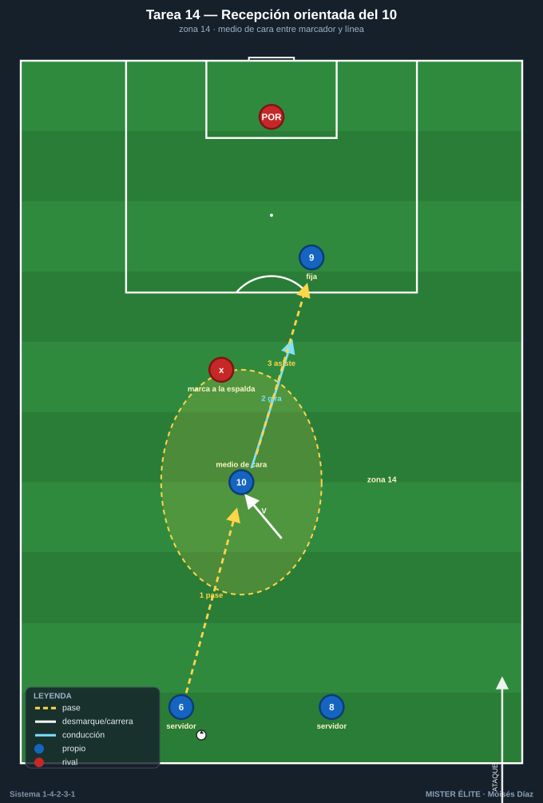
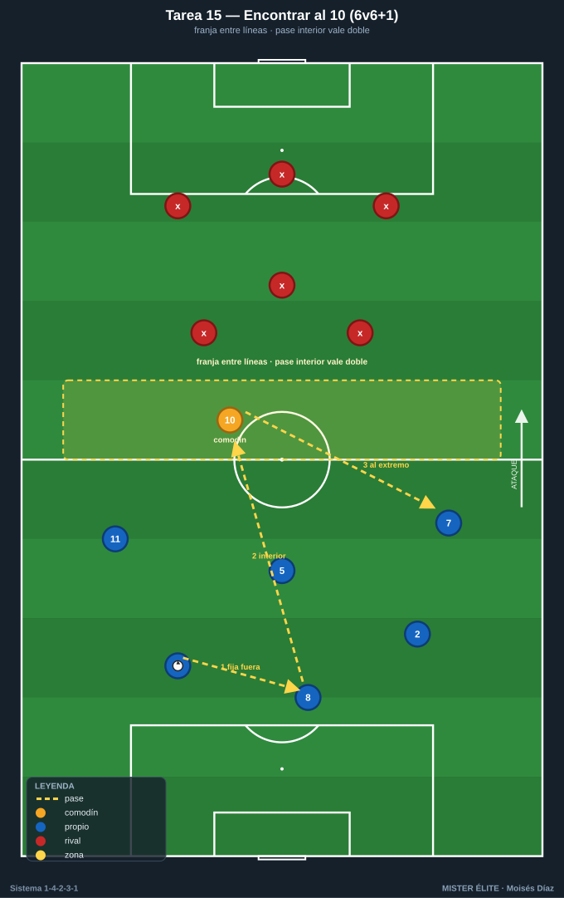
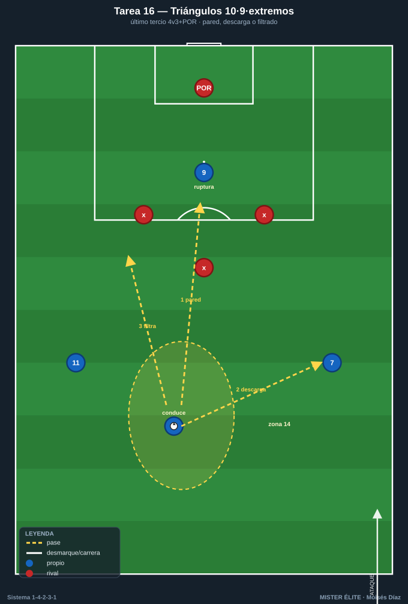
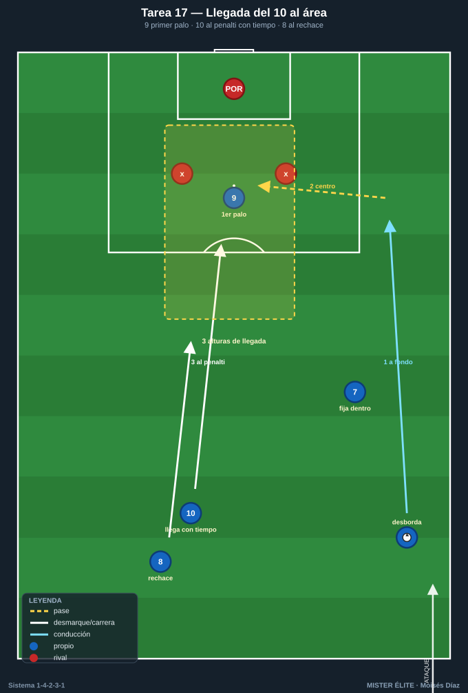
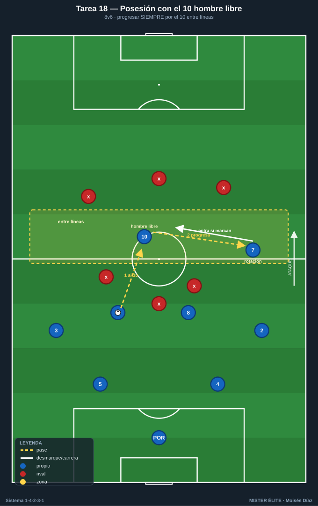

Bloque 4 · La mediapunta (10) entre líneas / zona 14 (T14–18)
El bloque clave. La zona 14 es la zona de más valor y el MCO 10 vive ahí: recibe medio de cara, asocia, llega al área y dirige la última fase. Categorías: F · A · S. Leyenda de pizarras en el README. Atacar siempre hacia arriba.
Tarea 4.1 — Recepción orientada del 10 en zona 14
- Objetivo: entrenar la recepción de cara / de perfil del mediapunta entre líneas, con primer control orientado a portería.
- Organización: 30x25 m frente a portería con POR. El 10 ocupa la zona 14. Servidores: 6 y 8 detrás; 9 fija arriba; un marcador (pivote rival) a la espalda del 10.

- Desarrollo: el pivote pasa al 10; este se perfila y recibe orientado entre el marcador y la línea, gira y conduce/finaliza o asiste al 9.
- Provocaciones: (1) El 10 recibe SIEMPRE de cara o medio perfil; prohibido de espaldas (si recibe de espaldas con el marcador encima, repetir): fuerza el desmarque previo en V. (2) Solo 2 toques: control orientado + acción. (3) Antes de recibir, un movimiento de engaño (mirar y arrancar al hueco contrario).
- Variantes: fácil = sin marcador; medio = marcador pasivo; difícil = marcador activo + opción de pared con el 9.
- Coaching: chequeo de hombro antes de recibir; perfil semiabierto; "recibe ya orientado, no controles y luego te giras".
- Duración / Categoría: 4x4 min · F
Tarea 4.2 — "Encontrar al 10": ventanas de pase entre líneas 6v6+1
- Objetivo: que el equipo genere y reconozca las ventanas de pase interior al mediapunta entre la línea de medios y la defensa rival.
- Organización: 40x36 m con una franja central "entre líneas" de 8 m de ancho. El 10 (comodín) solo juega dentro de esa franja. Azules atacan; rojos defienden con una línea de medios y una de defensa.

- Desarrollo: los azules circulan para abrir una ventana y filtrar al 10 en la franja; cuando recibe, juega a un toque para progresar.
- Provocaciones: (1) El pase interior al 10 vale doble y solo cuenta si llega a la franja entre líneas (no por fuera). (2) El 10 obligado a 1-2 toques (no se estanca). (3) +1 si tras recibir el 10 conecta con el 9 o un extremo en ruptura.
- Variantes: fácil = franja ancha; medio = franja estrecha; difícil = añadir un segundo defensor que vigile la franja.
- Coaching: "antes del pase interior, fija con un pase exterior"; timing = cuando el 10 está libre y la línea rival abierta; cuerpo del pasador.
- Duración / Categoría: 4x4 min · A
Tarea 4.3 — Asociación 10-9-extremos: triángulos en el último tercio
- Objetivo: combinaciones de toque en zona de finalización entre 10, 9 y extremos 7/11 (paredes, terceros hombres, ruptura del 9).
- Organización: último tercio, 35x40 m. Azules: 10, 9, 7, 11 vs 3 defensas rojos + POR.

- Desarrollo: el 10 conduce a zona 14 y combina: pared con el 9, descarga al extremo o filtra a la ruptura del 9. Finalizar en 3 acciones máximo.
- Provocaciones: (1) El gol solo vale si el balón pasa por el 10 en la jugada (director de la última fase). (2) Obligatorio un pase de ruptura (vertical entre defensas) antes del remate. (3) Máx. 8 s desde que el 10 recibe hasta el remate.
- Variantes: fácil = 4v2; medio = 4v3; difícil = 4v4 con un pivote rival que protege.
- Coaching: "el 10 fija y suelta"; sincronía de la ruptura del 9 (arranca cuando el 10 levanta la cabeza); ataque del segundo palo de los extremos.
- Duración / Categoría: 4x4 min · A
Tarea 4.4 — Llegada del 10 al área desde segunda línea
- Objetivo: entrenar la llegada al área del mediapunta desde segunda línea para rematar centros/descargas, aprovechando que el 9 fija a los centrales.
- Organización: ataque sobre portería con POR. Carril de centro (extremo + lateral en desdoblamiento), 9 fijando el primer palo, 10 llegando desde fuera del área al punto de penalti, 8 como segunda llegada.

- Desarrollo: centro desde banda; el 9 arrastra al primer palo, el 10 ataca el espacio de penalti, el 8 va al rechace. Repetir por ambos lados.
- Provocaciones: (1) El 10 no puede entrar al área antes del centro (llegada con tiempo desde atrás, no esperando dentro): si entra antes, gol anulado. (2) Remate del 10 vale doble. (3) Obligatorio 3 alturas de llegada (9 primer palo, 10 penalti, 8 rechace).
- Variantes: fácil = sin defensa; medio = con 2 defensas; difícil = defensa completa + POR y oposición al timing.
- Coaching: "llega, no estés"; lectura del momento de arrancar; ataque del espacio, no del balón.
- Duración / Categoría: 4x4 min (alternar bandas) · A
Tarea 4.5 — Posesión posicional con el 10 como hombre libre permanente
- Objetivo: que todo el equipo juegue "buscando al 10" como referencia entre líneas para progresar; jerarquía del mediapunta en la circulación.
- Organización: 50x40 m. Azules 8 (estructura 1-4-2-3-1 reducida) buscan progresar; rojos 6 defienden en bloque medio. El 10 ocupa la zona de enganche.

- Desarrollo: posesión para progresar de campo; cada vez que se encuentra al 10 entre líneas y este sostiene/gira, suma progresión.
- Provocaciones: (1) Para pasar de campo defensivo a ofensivo, el balón debe haber pasado por el 10 al menos una vez (no se progresa saltándolo). (2) El 10 que recibe y pierde de cara no penaliza; recibir de espaldas y perder, sí (premia la orientación). (3) Si el 10 está marcado, un extremo entra al espacio (rotación).
- Variantes: fácil = rojos pasivos; medio = bloque medio activo; difícil = marca individual al 10.
- Coaching: reconocer cuándo el 10 está libre; "si tapan al 10, alguien ocupa su espacio"; orientación y protección de balón del enganche.
- Duración / Categoría: 4x5 min · A